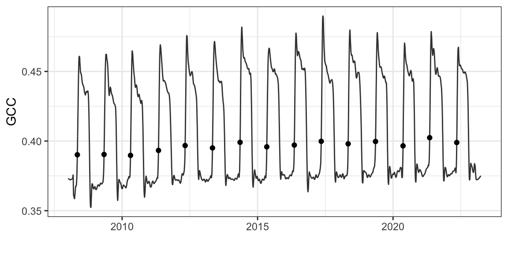
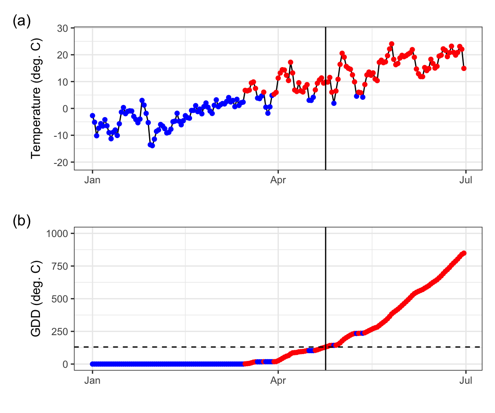
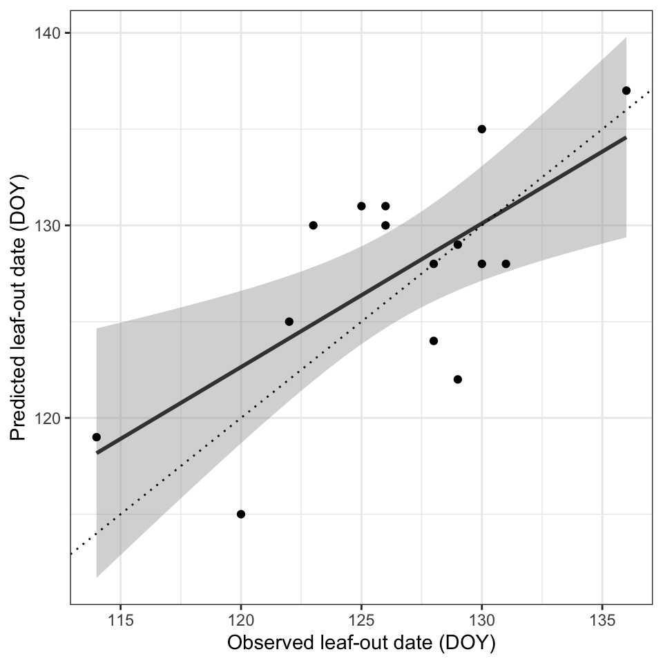
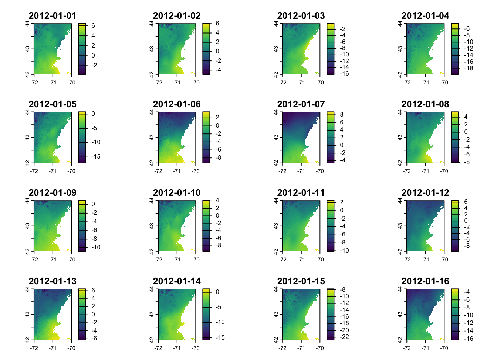

# I will use the phenocamr package which
# interfaces with the phenocam network API
# to download time series of vegetation
# greenness and derived phenology metrics
library(phenocamr)
# download greenness time series,
# calculate phenology (phenophases),
# amend with DAYMET data
phenocamr::download_phenocam(
site = "harvard$",
veg_type = "DB",
roi_id = "1000",
daymet = TRUE,
phenophase = TRUE,
trim = 2022,
out_dir = tempdir()
)
harvard_phenocam_data <- readr::read_csv(
file.path(tempdir(), "harvard_DB_1000_3day.csv"),
comment = "#"
)
# reading in harvard phenology only retaining
# spring (rising) phenology for the GCC 90th
# percentile time series (the default)
harvard_phenology <- readr::read_csv(
file.path(
tempdir(),
"harvard_DB_1000_3day_transition_dates.csv"
),
comment = "#"
) |>
dplyr::filter(
direction == "rising",
gcc_value == "gcc_90"
)6 Phenology modelling
6.1 Introduction
In the previous chapters (Chapter 4, Chapter 5), we investigated how the development of vegetation greenness throughout the seasons (that is, phenology) is associated with altitutde, and therefore with temperature, following the characteristic lapse rate. Although these preceeding chapters give an intuition on how phenology might change with global heating, they did not provide a model for predicting phenology as a function of temperature.
Luckily, the science on phenology has a long tradition and has yielded a rich body of literature. People have been observing vegetation phenology for hundreds of years, for example through observations of cherry blossom dates in Kyoto going back to the 9th century (Aono and Kazui 2008). Furthermore, there is a good understanding of how phenology is triggered in spring and how this can be modelled. The most basic principle uses the concept of growing degree days (GDD, see below) and first mentions go back to the 18th century as described by De Reaumur (1735).
This growing degree day concept stipulates that spring phenology depends on the accumulated temperature above a certain threshold. If a set amount of temperature accumulation is reached, it will trigger spring phenology (leaf unfolding). A model that predicts the spring phenology as a function of a temperature time series can be considered a mechanistic model - a mathematical description of how elements of a system are connected and how processes operate (see Introduction Chapter in Applied Geodata Science). GDD-based phenology models can be considered dynamic since the temporal structure (sequence of dates in the time series) matters and a starting date and value for the temperature summation has to be specified.
Note
This is a very dense chapter, covering both the concepts of constructing a (pseudo) mechanistic model and the basics of model parameterization. Take your time to read through the chapter multiple times to get a good grasp of the material presented.
6.2 PhenoCam validation data
To illustrate the use of growing degree days in modelling spring phenology, I will use PhenoCam data. The PhenoCam network (Andrew D. Richardson 2018; Andrew D. Richardson et al. 2018) uses network connected cameras to collect seasonal trajectories of vegetation greenness, as characterized with green chromatic coordinate (GCC) values. PhenoCam data can be downloaded using the phenocamr R package (Hufkens et al. 2018).
The phenocamr R package uses the PhenoCam API to access the latest GCC time series and derive phenology using a threshold-based methodology similar to that described in Chapter 5. The data in Figure 6.1 should therefore be familiar. The phenocamr API call also downloads DAYMET data, which includes both daily minimum and maximum data. This ancillary data will be used in this basic modelling example below.
Code
ggplot(harvard_phenocam_data) +
geom_line(
aes(
as.Date(date),
smooth_gcc_90
),
colour = "grey25"
) +
geom_point(
data = harvard_phenology,
aes(
as.Date(transition_25),
threshold_25
)
) +
labs(
x = "",
y = "GCC"
) +
theme_bw() +
theme(
legend.position = "none"
)
Growing degree days are defined as the cumulative sum of temperatures above a specified threshold (\(T_0\), most commonly \(T_0 = 5^\circ\)C).
\(\text{GDD}_{T_0,j}=\sum_{i=M}^j \max(T_i-T_0, 0)\).
\(M\) is the date at which the summation is initiated, and \(\text{GDD}_{T_0,M-1} = 0\). In R, this can be implemented as shown below.
# return mean daily temperature as well
# as formal dates (for plotting)
harvard_temp <- harvard_phenocam_data |>
group_by(year) |>
dplyr::mutate(
tmean = (tmax..deg.c. + tmin..deg.c.)/2
) |>
dplyr::mutate(
date = as.Date(date),
gdd = cumsum(ifelse(tmean >= 5, tmean - 5, 0))
) |>
dplyr::select(
date,
year,
tmean,
gdd
) |>
ungroup()
# convert the harvard phenology data and only
# retain required data
harvard_phenology <- harvard_phenology |>
mutate(
doy = as.numeric(format(as.Date(transition_25),"%j")),
year = as.numeric(format(as.Date(transition_25),"%Y"))
) |>
select(
year,
doy,
transition_25,
threshold_25
)Using this knowledge, we can plot plot the temperature time series of all days, distinguishing between days where the temperature threshold is exceeded or not, and calculate the cumulative temperature sum of days at which the temperature was above the specified threshold Figure 6.2.
Code
# grab only the 2010 value of spring phenology
harvard_phenology_2010 <- harvard_phenology |>
dplyr::filter(
year == 2010
)
harvard_gdd_value <- harvard_temp |>
dplyr::filter(
date == harvard_phenology_2010$transition_25
)
p <- ggplot(harvard_temp) +
geom_line(
aes(
date,
tmean
)
) +
geom_point(
aes(
date,
tmean,
colour = tmean > 5,
group = 1
)
) +
geom_vline(
data = harvard_phenology_2010,
aes(
xintercept = as.Date(transition_25)
)
) +
scale_colour_discrete(
type = c(
"blue",
"red"
)
) +
labs(
x = "",
y = "Temperature (deg. C)"
) +
xlim(
c(
as.Date("2010-01-01"),
as.Date("2010-06-30")
)
) +
theme_bw() +
theme(
legend.position = "none"
)
p2 <- ggplot(harvard_temp) +
geom_line(
aes(
date,
gdd
)
) +
geom_point(
aes(
date,
gdd,
colour = tmean > 5,
group = 1
)
) +
scale_colour_discrete(
type = c(
"blue",
"red"
)
) +
geom_vline(
data = harvard_phenology_2010,
aes(
xintercept = as.Date(transition_25)
)
) +
geom_hline(
data = harvard_gdd_value,
aes(
yintercept = gdd
),
lty = 2
) +
labs(
x = "",
y = "GDD (deg. C)"
) +
xlim(
c(
as.Date("2010-01-01"),
as.Date("2010-06-30")
)
) +
ylim(c(0, 1000)) +
theme_bw() +
theme(
legend.position = "none"
)
# compositing
p + p2 +
plot_layout(ncol = 1) +
plot_annotation(
tag_levels = "a",
tag_prefix = "(",
tag_suffix = ")"
)
Figure 6.2 shows how GDD increases during days when temperatures are above the threshold, as the season progresses. Spring leaf development in 2010 was observed on day-of-year (DOY) 114. According to the temperature record and our calculation of GDD, we found a GDD of 130.44\(^\circ\)C on that day. The simplest model for the leaf-out date may thus be formulated as the day when a GDD of 130.44\(^\circ\)C is reached. However, it is not guaranteed that the choice of this particular critical GDD value as the a parameter in our leaf-out model (often referred to as F* in literature) yields accurate predictions of leaf-out dates for multiple years and/or for multiple locations. To generalize our model, we have to pick a suitable value for the critical GDD (F*) such that the leaf-out date is accurately predicted across a larger set of years and/or sites when comparing to observations. Finding such a generalization is the next step in our development of a phenology model.
6.3 Growing degree day model optimization
Our GDD-based leaf-out model can be written in the form of a function that takes the temperature time series as its first argument, and as two parameters the temperature threshold above which temperatures are accumulated, and the critical GDD that determines the DOY at which leaf-out is predicted.
gdd_model <- function(temp, par) {
# split out parameters from a simple
# vector of parameter values
temp_threshold <- par[1]
gdd_crit <- par[2]
# accumulate growing degree days for
# temperature data
gdd <- cumsum(ifelse(temp > temp_threshold, temp - temp_threshold, 0))
# figure out when the number of growing
# degree days exceeds the minimum value
# required for leaf development, only
# return the first value
doy <- unlist(which(gdd >= gdd_crit)[1])
return(doy)
}Running the model on the original 2010 data with the previously observed values and parameters 5\(^\circ\)C for the temperature threshold and 130.44\(^\circ\)C for the critical GDD, should yield a predicted leaf-out date that matches the observed leaf-out date of 114.
# confirm that the model function
# returns expected results (i.e. DOY 114)
# (we filter out the year 2010, but
# removing the filter would run the
# model for all years!)
prediction <- harvard_temp |>
dplyr::filter(
year == 2010
) |>
group_by(year) |>
summarize(
pred = gdd_model(
temp = tmean,
par = c(5, 130.44)
)
)
print(prediction)# A tibble: 1 × 2
year pred
<dbl> <int>
1 2010 114Here, we picked the GDD at which the leaf-out was observed. The predicted leaf-out date, generated by a model that uses the observed GDD of the leaf-out date as its parameter for the critical GDD threshold is thus perfectly accurate. The prediction corresponds to the observed leaf-out date. However, will this parameter choice also generate accurate predictions for other years and/or sites?
6.3.1 Phenology model calibration
To obtain accurate predictions across a larger set of years and sites, we estimate a general set of parameters for our growing degree day model, i.e., we calibrate the model parameters. To do so, we want to minimize the error (a cost function) between the model results (for a given set of parameters, i.e. the temperature threshold and critical GDD) and our observed data obtained for multiple sites and years. If you’ve taken any introduction to statistical or machine learning, this problem will sound fairly familiar. For example, in a least squares regression model calibrates two parameters - an intercept and a slope - to minimize the difference between observed and predicted values. In our example, we do not have a linear model but a more complex one with two parameters. Nevertheless, the same concept to model calibration (parameter optimization) applies.
Estimating parameters efficiently for an arbitrary model (formulated as a function with the model parameters as one argument) can be done using various parameter optimization methods. In R, the most basic parameter optimization is implemented by the base-R nls() function, which implements a square error minimization for any (non-linear) function. Other examples include simulated annealing (GenSA R package), or Bayesian optimization methods (e.g., the BayesianTools R package). Here, we will use the GenSA R package which relies on the simulated annealing method to illustrate the estimation of model parameters.
In this example, the optimization minimizes a cost function which is defined as the root mean squared error (RMSE) between the observed and the predicted values.
# run model and compare to true values
# returns the RMSE
rmse_gdd <- function(par, data) {
# split out data
drivers <- data$drivers
validation <- data$validation
# calculate phenology predictions
# and put in a data frame
predictions <- drivers |>
group_by(year) |>
summarise(
predictions = gdd_model(
temp = tmean,
par = par
)
)
predictions <- left_join(predictions, validation, by = "year")
rmse <- predictions |>
summarise(
rmse = sqrt(mean((predictions - doy)^2, na.rm = TRUE))
) |>
pull(rmse)
# return rmse value
return(rmse)
}
Warning
Both the cost function as the growing degree day function are not optimized for computational efficiency. Both functions are written with clarity in mind to teach the basic concepts of model optimization/parameterization. Model optimization relies on iteratively searching for the best parameter by running the model thousands of times. Slow code can make it practically impossible to converge on a solution as time requirements grow beyond what is workable. Within the context of this worked example, computational efficiency is not a concern. However, when implementing your own code, take care to optimize both functions for efficiency by vectorization and other techniques.
During parameter optimization, we iteratively step through the parameter space, running the cost function (which in turn calls the main model, here gdd_model()), and find an optimal set of parameters that minimize the RMSE. Often, starting model parameters and limits to the parameter space are required. Defining the limits of the parameter space well can significantly reduce the time needed to converge on a solution, and is often bound by the physical constraints of the model. Similarly, temperature thresholds fall within a range that is determined by physiological limits of plant activity.
# starting model parameters
par = c(0, 130)
# limits to the parameter space
lower <- c(-10,0)
upper <- c(45,500)
# data needs to be provided in a consistent
# single data file, a nested data structure
# will therefore accept non standard data formats
data <- list(
drivers = harvard_temp,
validation = harvard_phenology
)
# optimize the model parameters
optim_par = GenSA::GenSA(
par = par,
fn = rmse_gdd,
lower = lower,
upper = upper,
control = list(
max.call = 4000
),
data = data
)$parAfter an optimization routine (calling the cost function 4000 times) the optimal parameters were determined to be 2.811523, 228.27844 for the temperature threshold and number of accumulation days respectively. We can now plug these values back into our model and run it across all available years. When looking at this small dataset for Harvard forest, we see a reasonable agreement between observed and predicted values (Figure 6.3). Obviously, including more sites and years would increase the model performance.
# run the model for all years
# to get the phenology predictions
predictions <- harvard_temp |>
group_by(year) |>
summarize(
prediction = gdd_model(
temp = tmean,
par = optim_par
)
)Code
# join predicted with observed data
validation <- left_join(predictions, harvard_phenology)
ggplot(validation) +
geom_smooth(
aes(
doy,
prediction
),
colour = "grey25",
method = "lm"
) +
geom_point(
aes(
doy,
prediction
)
) +
geom_abline(
intercept=0,
slope=1,
linetype="dotted"
) +
labs(
x = "Observed leaf-out date (DOY)",
y = "Predicted leaf-out date (DOY)"
) +
theme_bw() +
theme(
legend.position = "none"
)
More advanced models exist. Such models may include not only temperature but also radiation, precipitation and or temporal lags or so-called chilling requirements, frost during the preceding winter months. For an overview of these more advanced models I refer to Basler (2016) and Hufkens et al. (2018).
6.4 Spatial scaling
With a basic model parameterized you can explore if and how the relationship between observed and predicted values scale across a larger landscape. As example we will use a region around Boston in the eastern United States, defined by the coordinates -72 to -70 East, and 42 to 44 North. I will use DAYMET raster data to scale the results spatially (relying on the same driver data as used during parameterization). First I download both minimum and maximum temperature data and average them to a mean daily value (as previously used), using the appeears R package (Hufkens 2023).
To do so, first create a AppEEARS Earth Data Cloud user (here) and setup the appeears package with that user (see more detailed information in the appeears package documentation.
library(keyring)
library(appeears)
library(sf)
rs_set_key()
# if the package has no access to your system password manager,
# potentially use options(keyring_backend="file") before
# attempting to set a key
# To see whether the setup has worked, you can try to get the
# metadata of the product DAYMET v4:
rs_layers("DAYMET.004")Then I proceed to download the data. Note that this might take a while since the request is first queued and then prepared before it is available for download. The progress can be followed under: https://appeears.earthdatacloud.nasa.gov/explore.
# Define the bounding box coordinates
xmin <- -72; xmax <- -70
ymin <- 42; ymax <- 44
coords <- matrix(c(
xmin, ymin,
xmax, ymin,
xmax, ymax,
xmin, ymax,
xmin, ymin # Closing the polygon by repeating first point
), ncol = 2, byrow = TRUE)
# Create a simple feature geometry collection with CRS
roi <- st_sf(geometry = st_sfc(st_polygon(list(coords)),
crs = 4326) # WGS 84)
)
# build the area based request/task
df <- data.frame(
task = "DAYMET.004_2012",
subtask = "subtask",
latitude = NA,
longitude = NA,
start = "2012-01-01",
end = "2012-12-31",
product = "DAYMET.004",
layer = c("tmax", "tmin")
)
task <- rs_build_task(
df = df,
roi = roi,
format = "netcdf4"
)
# request the task to be executed
rs_request(
request = task,
user = "fabern",
transfer = TRUE,
path = here::here("../data"),
verbose = TRUE
)# Load the downloaded daily data:
r1 <- terra::rast(
here::here("../data",
"DAYMET.004_2012",
"DAYMET.004_1km_aid0001.nc"),
guessCRS=FALSE)
# Assign the correct CRS, e.g. WGS84 (EPSG:4326)
terra::crs(r1) <- "epsg:4326"
# The variables can be accessed with:
# r1["tmax"]
# r1["tmin"]In case there are issues with creating a NASA user account or the download you can use:
local_file <- tempfile(fileext = ".nc")
download.file("https://github.com/fabern/handfull_of_pixels/raw/refs/heads/main/data/DAYMET.004_2012/DAYMET.004_1km_aid0001.nc",
destfile = local_file)
r1 <- terra::rast(local_file)
# Assign the correct CRS, e.g. WGS84 (EPSG:4326)
terra::crs(r1) <- "epsg:4326"# Calculate the daily mean values based on 'tmin' and 'tmax'
mean_layer <- terra::mean(r1["tmax"],
r1["tmin"])
# fix the variable naming
varnames(mean_layer) <- "tmean"
names(mean_layer) <- gsub("tmax","tmean",names(mean_layer))This results in a raster containing a single variable ‘tmean’ for each day:
Code
terra::plot(mean_layer)
For convenience I limit the data to the first 180 days (layers) of the dataset to reduce the memory footprint of the calculations.
# subset to first 180 days
ma_nh_temp <- terra::subset(
mean_layer,
1:180
)One can then apply the model to this raster (cube) using the the terra::app() function and an appropriately formulated function, i.e. our growing degree day model gdd_model(). I refer to the terra::app() for the specifics on how to ensure your functions are compatible with raster processing, but the general rule is that the data argument comes first in the function applied (with all other parameters forwarded by name).
predicted_phenology <- terra::app(
ma_nh_temp,
fun = gdd_model,
par = optim_par
)Plotting these results show a diverse response across the landscape, with higher elevation locations in the north west of the scene having a later leaf out date (in DOY) then coastal or urban areas (i.e. the greater Boston areas south east in the scene). This is both a reflection of the lapse rate as discussed in Chapter 4 and the urban heat island effect (Zhang, Friedl, and Schaaf 2004).
Code
library(leaflet)
# set te colour scale manually
pal <- colorNumeric(
"magma",
values(predicted_phenology),
na.color = "transparent"
)
# build the leaflet map
# using ESRI tile servers
# and the loaded demo raster
leaflet() |>
addProviderTiles(providers$Esri.WorldImagery, group = "World Imagery") |>
addProviderTiles(providers$Esri.WorldTopoMap, group = "World Topo") |>
addRasterImage(
predicted_phenology,
colors = pal,
opacity = 0.8,
group = "Phenology model results"
) |>
addLayersControl(
baseGroups = c("World Imagery","World Topo"),
position = "topleft",
options = layersControlOptions(collapsed = FALSE),
overlayGroups = c("Phenology model results")
) |>
addLegend(
pal = pal,
values = values(predicted_phenology),
title = "DOY")